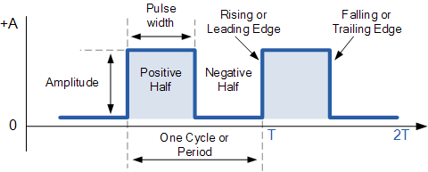

Temporizadores
Terminología

- Período (T): tiempo entre eventos repetitivos (segundos).
- Frecuencia (f): eventos por segundo (Hz). Relación: $$ f = \frac{1}{T} $$.
- Tick: unidad discreta de tiempo del temporizador $$ \Delta t = \frac{1}{f_{\text{timer}}} $$.
- Resolución: el paso temporal mínimo que puedes representar $$ \text{Resolucion} \approx \frac{1}{f_{\text{timer}}} $$.
- Jitter: variación no deseada del instante real respecto al ideal.
- Prescaler: divisor del reloj que alimenta al temporizador (reduce f_timer). Nota: el timer de sistema del RP2350 no usa prescaler clásico; selecciona la fuente de tick (µs o ciclos de clk_sys).
- Overflow / wrap: cuando el contador alcanza su límite y “se da la vuelta”.
- One-shot vs periódico: dispara una vez vs se rearma automáticamente.
Relojes del sistema y dominios
- Reloj de CPU (f_core/f_sys): ejecuta instrucciones.
- Reloj de periféricos (f_periph): algunos periféricos usan reloj propio.
- PLL/DFS: multiplicadores/divisores que alteran f_core y f_periph.
- Estabilidad: si cambias clocks en runtime, recalcula configuraciones temporales.
Modos de Timer
- Temporizador: avanza con un reloj conocido (mide tiempo).
- Contador: avanza con eventos externos (mide sucesos).
- Modos comunes: up, down, up/down, one-shot, periódico, compare, capture.
- Salidas: flags, interrupciones, compare-match, toggles de pin, DMA trigger.
Cálculo de Tiempo
- f_clk: reloj de entrada del timer (core o periférico).
- P: valor de preescalador (según proveedor puede ser N, N-1, o potencias de 2).
- f_timer = f_clk / (P_efectivo)
- Reload: valor de recarga (ancho N bits)
RP2350
Contador de 64 bits que avanza con un tick seleccionado:
- Modo µs: \(\Delta t = 1~\mu s\).
- Modo ciclos: \(\Delta t = \frac{1}{f_{\text{sys}}}\) (p. ej., \(1/150~\text{MHz} \approx 6.67~\text{ns}\)).
Alarmas por comparación con el contador (varias alarmas disponibles).
Las alarmas comparan 32 bits bajos del contador ⇒ el máximo tiempo programable hacia el futuro es:
- Ej.: en 1 µs/tick → \(\approx 71.6~\text{min}\)
- En ciclos @ 150 MHz → \(\approx 28.6~\text{s}\)
Usar deadlines absolutos y rearme acumulativo:
En la ISR:
(Así evitas que la latencia de la ISR acumule error de fase).
Calculos de ejemplos:
Periodo 10 µs (100 kHz)
- Modo µs: \(\text{intervalo\_ticks}=10\)
- Modo ciclos @ 150 MHz: \(\text{intervalo\_ticks}=1500\)
Periodo 3.3 µs
- Modo µs: no exacto (solo enteros de µs).
- Modo ciclos @ 150 MHz: \(3.3 \cdot 150 = 495\) ciclos → exacto.
Funciones
static inline bool add_repeating_timer_ms(int32_t delay_ms, repeating_timer_callback_t callback, void *user_data, repeating_timer_t *out) {
return alarm_pool_add_repeating_timer_us(alarm_pool_get_default(), delay_ms * (int64_t)1000, callback, user_data, out);
}
int32_t delay_ms: el retardo de repetición en milisegundos; si es > 0, este es el tiempo entre que termina un callback (función de devolución de llamada) y comienza el siguiente; si es < 0, entonces es el negativo del tiempo entre los inicios de los callbacks. El valor 0 se trata como 1 microsegundo.repeating_timer_callback_t callback: La funcion callback del temporizador repetiblevoid *user_data: datos del usuario que se pasarán y almacenarán en la estructurarepeating_timerpara ser utilizados por el callback.repeating_timer_t *out: el puntero a la estructura propiedad del usuario donde se almacenará la información del temporizador repetitivo.
irq_set_exclusive_handler(ALARM_IRQ, on_alarm_irq);
- Qué hace: registra tu función
on_alarm_irqcomo único manejador para la línea de interrupciónALARM_IRQen el NVIC (vector de interrupciones del M33).
hw_set_bits(&timer_hw->inte, 1u << ALARM_NUM);
- Qué hace: habilita dentro del periférico TIMER la fuente de interrupción para la alarma
ALARM_NUM. - Otros Params
intr= estado bruto de flags (quién pidió interrupción).inte= enables (quién tiene permiso de pedir).ints= estado enmascarado (intr & inte).
irq_set_enabled(ALARM_IRQ, true);
- Qué hace: habilita la línea de interrupción
ALARM_IRQen el NVIC (controlador de interrupciones del núcleo). - Opcional: puedes ajustar la prioridad:
irq_set_priority(ALARM_IRQ, priority); // 0 = más alta, 255 = más baja
Ejemplos
Blink Basico sin delay
// Blink con timer (SDK alto nivel): cambia BLINK_MS para ajustar
#include "pico/stdlib.h"
#include "pico/time.h"
#define LED_PIN PICO_DEFAULT_LED_PIN
static const int BLINK_MS = 250; // <-- ajusta tu periodo aquí
bool blink_cb(repeating_timer_t *t) {
static bool on = false;
gpio_put(LED_PIN, on = !on);
return true; // seguir repitiendo la alarma
}
int main() {
stdio_init_all();
gpio_init(LED_PIN);
gpio_set_dir(LED_PIN, true);
repeating_timer_t timer;
// Programa una interrupción periódica cada BLINK_MS:
add_repeating_timer_ms(BLINK_MS, blink_cb, NULL, &timer);
while (true) {
// El trabajo "pesado" debería ir aquí (no en la ISR).
tight_loop_contents();
}
}
Blink con alarma configurable
// Blink con timer de sistema (bajo nivel): programando ALARM0 e IRQ
#include "pico/stdlib.h"
#include "hardware/irq.h"
#include "hardware/structs/timer.h"
#define LED_PIN PICO_DEFAULT_LED_PIN
#define ALARM_NUM 0 // usaremos la alarma 0
// Calcula el número de IRQ para esa alarma
#define ALARM_IRQ timer_hardware_alarm_get_irq_num(timer_hw, ALARM_NUM)
static volatile uint32_t next_deadline; // próximo instante (en us) en 32 bits bajos
// Por defecto el timer cuenta µs (no cambiamos la fuente).
static volatile uint32_t intervalo_us = 1000000u; // periodo en microsegundos
void on_alarm_irq(void) {
// 1) Limpiar el flag de la alarma
hw_clear_bits(&timer_hw->intr, 1u << ALARM_NUM);
// 2) Hacer el trabajo toggle LED
sio_hw->gpio_togl = 1u << LED_PIN;
// 3) Rearmar la siguiente alarma con "deadline acumulativo"
next_deadline += intervalo_us;
timer_hw->alarm[ALARM_NUM] = next_deadline;
}
int main() {
stdio_init_all();
// Configura el LED
gpio_init(LED_PIN);
gpio_set_dir(LED_PIN, true);
// "now" = 32 bits bajos del contador (tiempo en µs)
uint32_t now_us = timer_hw->timerawl; // lectura 32b (low) del contador
next_deadline = now_us + intervalo_us; // primer deadline
// Programa la alarma
timer_hw->alarm[ALARM_NUM] = next_deadline;
// Crea un handler exclusivo para ligar el callback a la IRQ de la alarma
irq_set_exclusive_handler(ALARM_IRQ, on_alarm_irq);
// Habilita dentro del periférico TIMER la fuente de interrupción para la alarma ALARM_NUM inte = interrupt enable
hw_set_bits(&timer_hw->inte, 1u << ALARM_NUM);
//Habilita la IRQ en el NVIC (controlador de interrupciones del núcleo)
irq_set_enabled(ALARM_IRQ, true);
while (true) {
// Mantén el bucle principal libre; lo pesado va aquí, no en la ISR
tight_loop_contents();
}
}
Blink Multiples
// Dos LEDs con múltiples alarmas del timer de sistema (RP2350 / Pico 2) en modo µs
// - ALARM0 controla el LED "default" (PICO_DEFAULT_LED_PIN).
// - ALARM1 controla un LED externo en GPIO 0.
// Cambia LED0_MS y LED1_MS para ajustar la velocidad de parpadeo de cada LED.
#include "pico/stdlib.h"
#include "hardware/irq.h"
#include "hardware/structs/timer.h"
#include "hardware/gpio.h"
#define LED0_PIN PICO_DEFAULT_LED_PIN // LED integrado
#define LED1_PIN 0 // LED externo en GPIO 0
#define ALARM0_NUM 0
#define ALARM1_NUM 1
#define ALARM0_IRQ timer_hardware_alarm_get_irq_num(timer_hw, ALARM0_NUM)
#define ALARM1_IRQ timer_hardware_alarm_get_irq_num(timer_hw, ALARM1_NUM)
// Próximos "deadlines" (32 bits bajos en µs) y sus intervalos en µs
static volatile uint32_t next0_us, next1_us;
static const uint32_t INTERVALO0_US = 250000u;
static const uint32_t INTERVALO1_US = 400000u;
// ISR para ALARM0
static void on_alarm0_irq(void) {
hw_clear_bits(&timer_hw->intr, 1u << ALARM0_NUM);
sio_hw->gpio_togl = 1u << LED0_PIN;
next0_us += INTERVALO0_US;
timer_hw->alarm[ALARM0_NUM] = next0_us;
}
// ISR para ALARM1
static void on_alarm1_irq(void) {
hw_clear_bits(&timer_hw->intr, 1u << ALARM1_NUM);
sio_hw->gpio_togl = 1u << LED1_PIN;
next1_us += INTERVALO1_US;
timer_hw->alarm[ALARM1_NUM] = next1_us;
}
int main() {
gpio_init(LED0_PIN);
gpio_set_dir(LED0_PIN, GPIO_OUT);
gpio_put(LED0_PIN, 0);
gpio_init(LED1_PIN);
gpio_set_dir(LED1_PIN, GPIO_OUT);
gpio_put(LED1_PIN, 0);
// Timer de sistema en microsegundos (por defecto source = 0)
timer_hw->source = 0u;
uint32_t now_us = timer_hw->timerawl;
// Primeros deadlines
next0_us = now_us + INTERVALO0_US;
next1_us = now_us + INTERVALO1_US;
// Programa ambas alarmas
timer_hw->alarm[ALARM0_NUM] = next0_us;
timer_hw->alarm[ALARM1_NUM] = next1_us;
// Limpia flags pendientes antes de habilitar
hw_clear_bits(&timer_hw->intr, (1u << ALARM0_NUM) | (1u << ALARM1_NUM));
// Registra handlers exclusivos para cada alarma
irq_set_exclusive_handler(ALARM0_IRQ, on_alarm0_irq);
irq_set_exclusive_handler(ALARM1_IRQ, on_alarm1_irq);
// Habilita fuentes de interrupción en el periférico TIMER
hw_set_bits(&timer_hw->inte, (1u << ALARM0_NUM) | (1u << ALARM1_NUM));
// Habilita ambas IRQ en el NVIC
irq_set_enabled(ALARM0_IRQ, true);
irq_set_enabled(ALARM1_IRQ, true);
// Bucle principal: todo el parpadeo ocurre en las ISRs
while (true) {
tight_loop_contents();
}
}